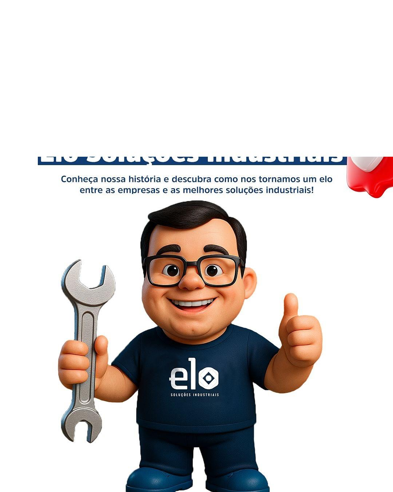

Origem técnica
A história começa no atendimento especializado, com leitura prática das demandas de manutenção e reposição.
Uma história de atendimento técnico em Juiz de Fora que evoluiu para uma marca focada em conectar empresas, profissionais e equipes de manutenção às soluções industriais certas.

A ELO Soluções Industriais nasceu da evolução da antiga Minas Ferragens e Hidráulica. A empresa preserva a experiência construída no atendimento técnico e assume uma comunicação mais clara para o setor industrial.
A nova marca reforça a ideia de elo: a ligação entre a necessidade de manutenção, obra ou produção e a solução adequada em ferramentas, ferragens, hidráulica, EPIs, lubrificantes, rolamentos e conexões.
O atendimento continua próximo, direto e consultivo, com foco em empresas, oficinas, metalúrgicas, construção civil, transportadoras, equipes técnicas e profissionais de Juiz de Fora - MG.
A história começa no atendimento especializado, com leitura prática das demandas de manutenção e reposição.
A ELO amplia o discurso para soluções industriais e atendimento a negócios que dependem de agilidade e disponibilidade.
O cliente envia a necessidade e recebe orientação comercial para orçamento, medidas, aplicações e alternativas.
Na prática, isso significa organizar um mix técnico útil, responder rápido e apoiar decisões de compra em manutenção, obra e rotina produtiva.